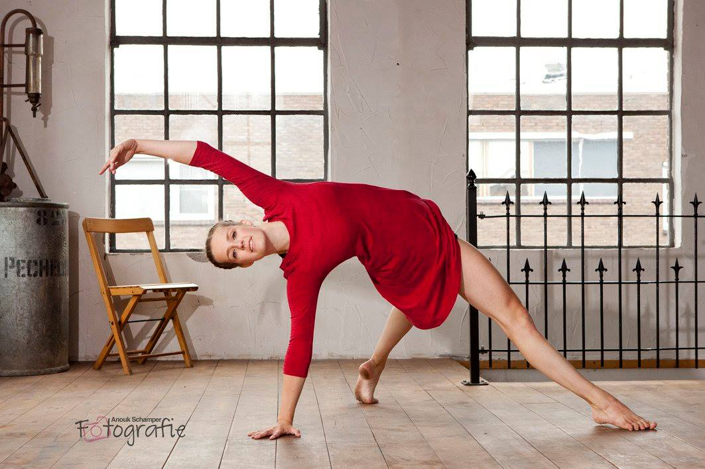

Babs Broeders
 Babs Balletschool is een onderneming van Babs Broeders.
Babs Balletschool is een onderneming van Babs Broeders.
Na de vooropleidingen in Rotterdam en Arnhem studeerde ik in 1997 af als dansdocente aan de opleiding Docent Dans ArtEZ Dansacademie Arnhem, en startte ik met lesgeven in de specialisaties kleuterballet, kinderballet, klassiekballet, spitzentechniek en flamencodans. In Elst begon mijn loopbaan in 1998 bij de toenmalige balletschool 'Dans-Anne'. Sindsdien heb ik op diverse dansscholen, basisscholen en culturele instellingen in Gelderland en Brabant de nodige ervaring op gedaan.
Met trots kan ik zeggen dat sinds augustus 2008 mijn eigen balletschool een feit is.
Dansplezier speelt een grote rol in mijn lessen en beheersing van de danstechniek maakt het dansen nog plezieriger.
Door zelf te blijven trainen en bijscholingen te volgen probeer ik op de hoogte te blijven van de danstechnieken, lichamelijk inzicht, leerlijnen, methodiek en pedagogische mogelijkheden.
Babs Balletschool is ook aangesloten bij het NBDO Dansbelang de bond voor dansprofessionals.
Dansen is voor mij een liefde, en ook een soort fijne verslaving die bij mij nooit is overgegaan. Ik hoop dat ik mijn dansleerlingen ook van deze liefde kan laten meegenieten.
Babs.
Britt de Vries

Britt is afgestudeerd in 2016 aan de opleiding Docent Dans ArtEZ Dansacademie Arnhem. Naast het lesgeven bij Babs Balletschool geeft zij ook nog les bij verschillende andere dansscholen. De stijlen waarin Britt lesgeeft binnen Babs Balletschool zijn;Peuterdans, Kleuterballet, Kinderballet, beginners Klassiek voor tieners ,Jazz en Modern. Naast haar lessen bij Babs Balletschool heeft zij ervaring in het werkveld met Dansproeverij, Pilates, Barre Workout, Productiegroepen, Spitzen, Dans je fit 50+, leerlijn klassiek, leerlijn modern en Jumps en Tricks op andere scholen. Het dansen en doceren is altijd al een fascinatie van haar geweest. Desondanks heeft zij vóór haar dansopleiding nog een andere opleiding gedaan waar zij ook weg van was namelijk film. Beide zijn een grote passie voor haar dus probeert zij dan ook zo veel mogelijk overlappingen te maken tussen deze twee kunstdisciplines.
Daphne Wams
.jpg) Daphne is in 2018 afgestudeerd van de Bachelor opleiding Docent Dans ArtEZ Dansacademie Arnhem. Tijdens haar lessen vindt ze het belangrijk om een fijne sfeer te creëren waarbinnen iedereen zijn of haar danskwaliteiten kan ontwikkelen, individueel of in de groep. Het vinden van balans tussen uitdaging en ontspanning speelt hierbij een rol. Daphne geeft graag aan verschillende groepen les, haar motto is dan ook dat iedereen kan dansen, zolang je er plezier aan beleeft. Bij Babs Balletschool geeft ze met veel plezier modern en jazz op de maandag avond aan volwassenen. Sinds kort geeft zij ook jazzballet aan kids vanaf 9 jaar.
Daphne is in 2018 afgestudeerd van de Bachelor opleiding Docent Dans ArtEZ Dansacademie Arnhem. Tijdens haar lessen vindt ze het belangrijk om een fijne sfeer te creëren waarbinnen iedereen zijn of haar danskwaliteiten kan ontwikkelen, individueel of in de groep. Het vinden van balans tussen uitdaging en ontspanning speelt hierbij een rol. Daphne geeft graag aan verschillende groepen les, haar motto is dan ook dat iedereen kan dansen, zolang je er plezier aan beleeft. Bij Babs Balletschool geeft ze met veel plezier modern en jazz op de maandag avond aan volwassenen. Sinds kort geeft zij ook jazzballet aan kids vanaf 9 jaar.
Sarah Döker (Stagiaire)
 Sarah zit nu in haar derde jaar van de Bachelor opleiding Docent Dans ArtEZ Dansacademie Arnhem.
Zij verzorgt de les Folklore voor kids vanaf 8 jaar. Ook is zij bezig met een project voor haar opleiding waarbij een aantal leerlingen haar choreografie instuderen en op het toneel gaan zetten.
Sarah zit nu in haar derde jaar van de Bachelor opleiding Docent Dans ArtEZ Dansacademie Arnhem.
Zij verzorgt de les Folklore voor kids vanaf 8 jaar. Ook is zij bezig met een project voor haar opleiding waarbij een aantal leerlingen haar choreografie instuderen en op het toneel gaan zetten.
Al op vroege leeftijd heeft zij ontdekt dat danslesgeven haar grote passie is en onder het motto "let's move to move something", probeert zij haar leerlingen iedere keer opnieuw enthousiast te maken en mee te nemen in de wereld van de dans.
Haar eigen fascinatie heeft zij in de stijl folklore kunnen vinden, zo spelen in haar lessen de achtergond van de muziek, klederdrachten en de geschiedenis van diverse volken en landen een belangrijk rol. Samen de wereld rond dansen en op die manier ook leren welke tradities en gewoontes bij een land horen staat in de lessen centraal.